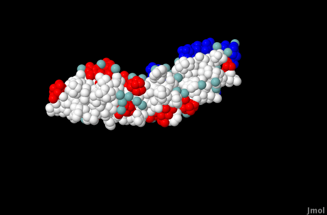

Introduction to Machine Learning and Data Mining
Kyle I S Harrington / kyle@eecs.tufts.edu
Some slides adapted from Roni Khardon
Feature Preprocessing
The range of values for a given feature can impact an algorithm's performance
Remember using the value of the year directly on assignment 1?
Linear scaling
Scale the values into the range $[0,1]$
$x \leftarrow \frac{ x - x_{min} }{ x_{max} - x_{min} }$
Scale based on training set only
Z-normalization
Scale the distribution to have mean=0 and std=1
$x \leftarrow \frac{ x - \mu_X }{ \sigma_X }$
Scale based on training set only
Feature Discretization
Some algorithms only work on discrete features
We may need to discretize real-valued features
Feature Discretization
Calculate the histogram
This divides the values into bins
- Equal bin sizes
- Equal # of instances per bin
Feature Discretization
Alternatively, use a heuristic/ad-hoc method to discretize in a useful way
E.G. Build a decision tree, let the DT algorithm discretize, and use the split values of the optimized tree
From Discrete to Numerical
Some features are unordered (i.e. Browsers = [ Firefox, Chrome, Safari ])
Most common approach is to use unit vectors:
| Firefox | Chrome | Safari |
| 1 | 0 | 0 |
| 0 | 1 | 0 |
| 0 | 0 | 1 |
Final Project
Proposal due: 03/07
Write a 300-500 word abstract describing your proposed project. This should include 2-3 references of papers you expect to include in your final paper.
Final Project
Project due: 04/25
Turn in a 8-12 page paper. A rough outline is:
- Background on problem
- Related work
- Your method
- Results
- Conclusion and future work
- References
Final Project: Being prepared
- Take excessive amounts of notes (Powerpoints are good for note taking)
- Keep track of sources
- Track down datasets/verify they can be accessed
- Jupyter can be used for writing text, doing ML, and making figures/graphs
Final Project: Resources
- Google Scholar, Sci-hub for references
- Word, Libreoffice, Latex/Overleaf, Markdown+Pandoc for writing
- Store code and even the paper on Github, Bitbucket, Gitlab
- Notebook style coding/writing (i.e. Jupyter) will help form the good habit of excessive note taking
Background on problem
B-cell receptors bind specific molecular structures to recruit immune system activity.
 B-cell antibody release for recruitment. Image from Arizona Science Center/Wikipedia
B-cell antibody release for recruitment. Image from Arizona Science Center/Wikipedia
Background on problem

Background on problem
The epitope prediction problem:
Given that a protein is a sequence of amino acids that fold into a 3D shape, only a subset of these amino acids are bound by B-cell receptors. Which ones?
 Protein folding. Image from L. El Ghaoui, Berkeley
Protein folding. Image from L. El Ghaoui, Berkeley
Exciting Title
Complex Features in Prediction of Discontinuous B-cell Epitopes
This is a project with James Chin.
Related work
There are existing methods for B-cell epitope prediction. They vary in terms of specific feature sets, machine learning algorithms, and training/test sets.
- Discotope - Log-odds ratios for features (Haste Anderson et al, 2006)
- Epitopia - Naive Bayes classifier (Rubinstein et al, 2009)
- PEASE - Random forest (Sela-Culang et al, 2014)
Method
Much of the advancement in B-cell epitope prediction has been driven by improvement in features.
We propose a method for synthesizing complex features from a set of basis features that allows provides high-degrees of nonlinearity not possible with simple ML representations.
Results
We compare the peformance of a random forest classifier trained on both simple and complex features.  Example classification with simple features. True-positive (blue), false-negative (red), false-positive (green), true-negative (white). Image by Harrington and Chin.References
- Rubinstein, N.D., Mayrose, I., Martz, E. and Pupko, T., 2009. Epitopia: a web-server for predicting B-cell epitopes. BMC bioinformatics, 10(1), p.287.
- Haste Andersen, P., Nielsen, M. and Lund, O., 2006. Prediction of residues in discontinuous B‐cell epitopes using protein 3D structures. Protein Science, 15(11), pp.2558-2567.
- Sela-Culang, I., Benhnia, M.R.E.I., Matho, M.H., Kaever, T., Maybeno, M., Schlossman, A., Nimrod, G., Li, S., Xiang, Y., Zajonc, D. and Crotty, S., 2014. Using a combined computational-experimental approach to predict antibody-specific B cell epitopes. Structure, 22(4), pp.646-657.
What Next?
Linear Threshold Units